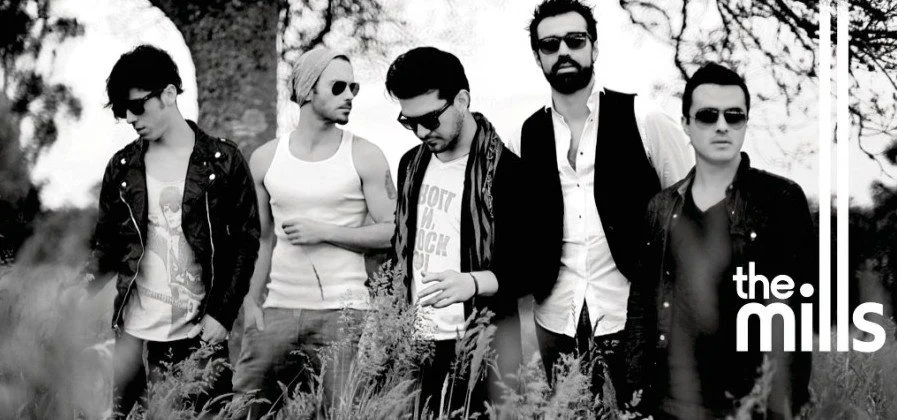

Tres Seis Cinco
Uno a veces piensa mas de lo que hay que pensar
Dos el numero ideal para poder amar
Y tres, alguien va a perder
Dame tres segundos que de ti me enamore
Estaciones en un año cuatro deben ser
Y ves, que empezó otra vez
Sin conciencia puede irte mal
Seis seis seis el diablo esta de mas
Doce meses para verte regresar
Tres seis cinco días para no olvidar
Son siete pecados que te pueden condenar
Es el infinito el ocho en horizontal
Y ves,lo que puede ser
Nueve meses tienes para llegar hasta aquí
El alfa y el omega es el principio y es el fin de ti
Inicio para mi
Once, once días es el camino que me llevara hasta ti
Diez no existe aquí
Doce meses para verte regresar
Tres seis cinco días para no olvidar
Doce meses para verte regresar
Tres seis cinco días para no olvidar
Tengo que contar las horas para verte en fin
Uno, dos, tres, cuatro vamos a parar aqui
Doce meses para verte regresar
Tres seis cinco días para no olvidar
Doce meses para verte regresar
Tres seis cinco días para no olvidar.
Compositores: De La Cueva Rosales Javier Fernando / . Bako /
. Dizee / . Geogy